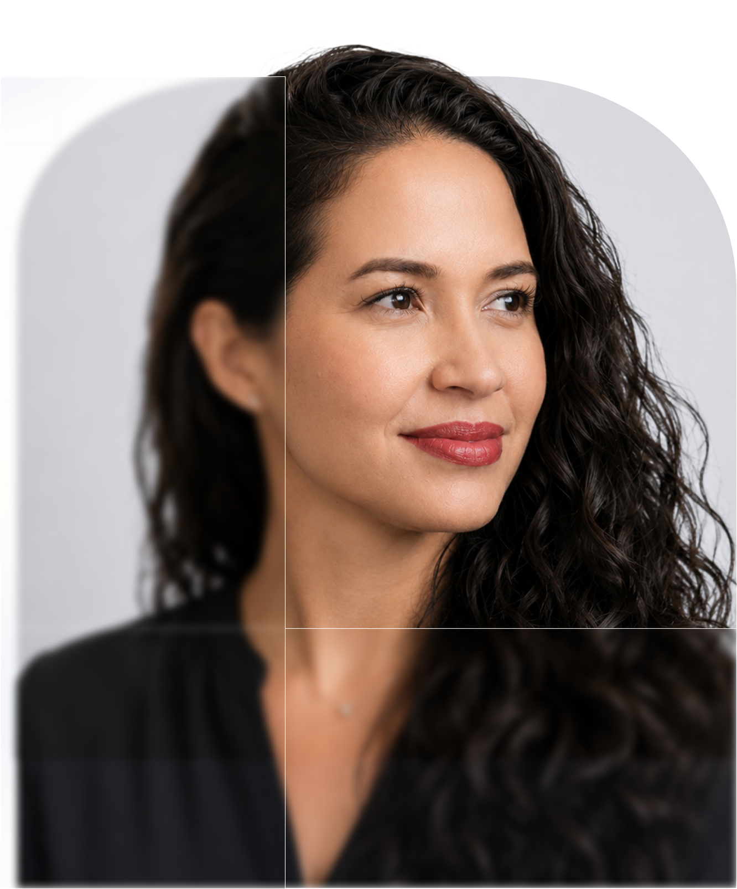
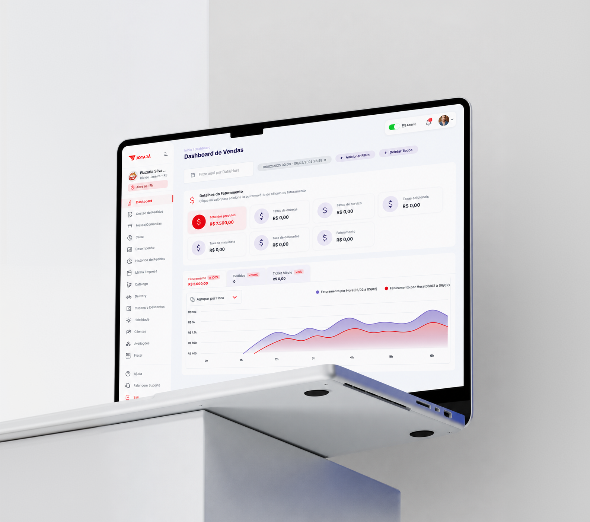
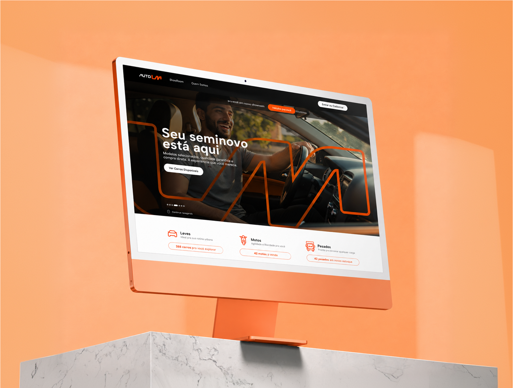
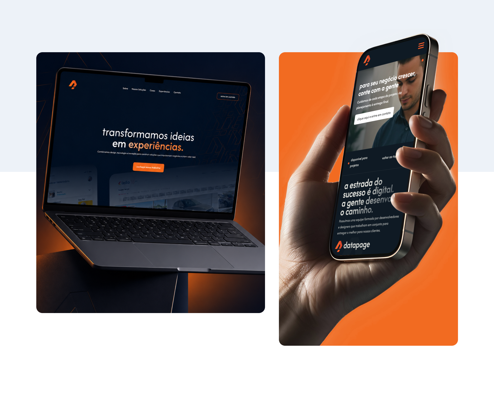
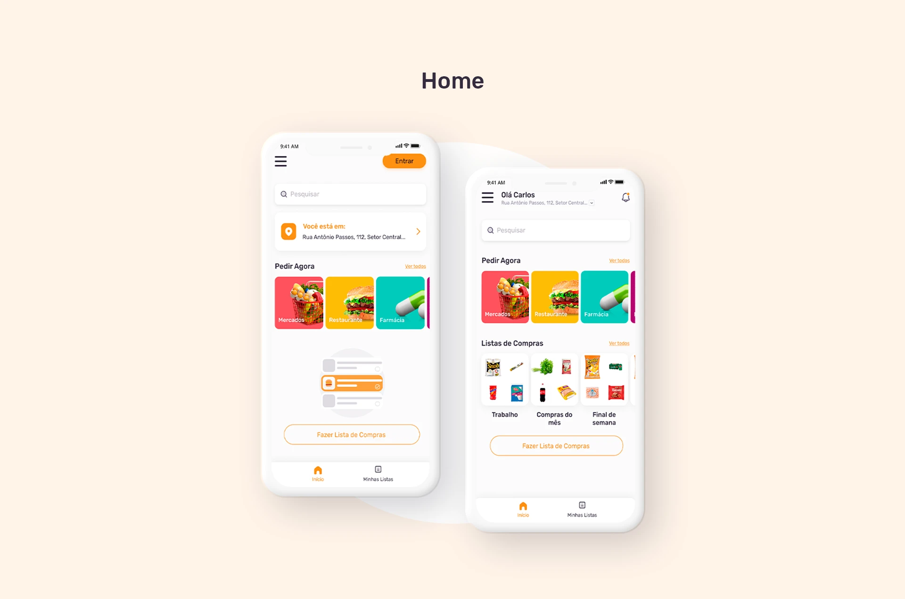
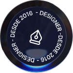

anos criando interfaces, sites, sistemas e aplicativos.

Atuação
UX/UI · Produto · Design System · Front-end Vue
Design de produtos e interfaces
UI Designer e Product Designer
criando experiências digitais claras, elegantes e escaláveis para sistemas, aplicativos e produtos complexos.
Role para explorar ↓
sites institucionaisproduct designvue.js
design systemsassapps
landing pagesblogs e portaishotsites
sites institucionaisproduct designvue.js
design systemsassapps
Experiência em produto digital
Design,
Design,
produto
e interface.
Uma visão rápida sobre minha trajetória criando sistemas, aplicativos e experiências digitais.
entregas digitais entre produto, UI e front-end.
melhoria de eficiência em fluxo de cadastro.
visualizações acumuladas em projetos publicados.
‹ leiloitaú◉ bradescoAUTOLMDiário da
Manhã➤ JOTAJÁ
PROJECTS
Projetos selecionados
Projetos com
Projetos com
produto, sistema
e experiência.
Cases que mostram minha atuação entre visual, fluxos, componentes, produto digital e implementação.
Case Study Banco BTG
Redesign conceitual da home com apoio de IA generativa.

Jotajá
Plataforma administrativa para gestão de pedidos, catálogo, clientes, mesas e operação.

AutoLM
Experiência digital para venda direta de veículos, unindo visual premium e jornada de compra.

datapage
Nova identidade e site institucional para software house, comunicando tecnologia e inovação.

Compare e Compre
Processo de UI Design aplicado ao desenvolvimento de produto durante a pandemia.


Sobre mim
Um pouco mais
Um pouco mais
sobre mim
Sou UX/UI Designer e Front-end Developer, com experiência na criação de sites, sistemas, aplicativos e plataformas digitais.
Ao longo da minha trajetória, atuei em projetos para diferentes segmentos, com forte vivência no mercado automotivo, leilões, venda de veículos, SaaS e sistemas administrativos.
Meu diferencial está em unir visão visual, pensamento de produto e conhecimento técnico de front-end para criar interfaces mais consistentes, escaláveis e fáceis de usar.
PROCESS
Processo
Da complexidade
Da complexidade
à interface
clara.
Meu processo combina entendimento do problema, organização de informação, desenho de fluxos, criação visual, prototipação e refinamento com visão de implementação.
Entender
Contexto, usuário, regras de negócio, limitações e oportunidades.
Estruturar
Arquitetura, fluxos, estados, prioridades e requisitos da interface.
Desenhar
UI, componentes, protótipo, responsividade e linguagem visual.
Evoluir
Documentação, handoff, testes visuais, ajustes e melhoria contínua.
FEEDBACKS
Feedbacks selecionados
Trabalhos reais,
Trabalhos reais,
feedbacks reais
“Braba demais! Uma das melhores criadoras de UX com que tive o privilégio de trabalhar. Você é a melhor.”
“Conheci mais sobre o trabalho da Vanessa e fiquei bastante impressionado com sua trajetória. O perfil dela se alinha muito bem ao que buscamos para a área de UX na Jotajá.”
“Está sempre um passo à frente. Antecipando desafios e buscando conhecimento. Parabéns, Vanessa!”
“Destaca-se por sua habilidade em criar interfaces modernas, responsivas e de alta performance, além de sua excelente capacidade de resolver problemas, realizar entregas pontuais e colaborar com a equipe.”